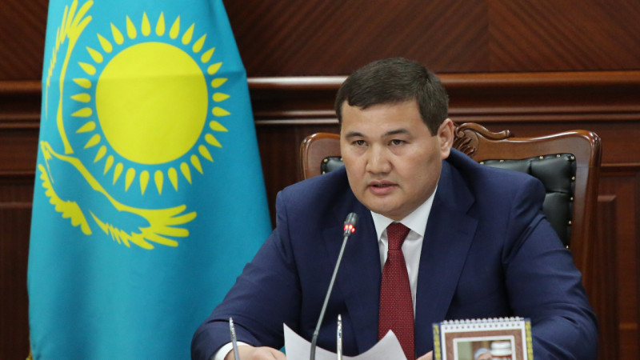

Қазақстан Республикасының мемлекеттiк Елтаңбасы
Қазақстан Pеспубликасының мемлекеттiк Елтаңбасы — Қазақстан Республикасының негiзгi мемлекеттiк рәмiздерiнiң бiрi. Қазақстан Республикасының Президентінің “Қазақстан Республикасының Мемлекеттiк рәмiздерi туралы” конституциялық заң күшi бар Жарлығымен (24.1.1996) белгiленген. Рәмiздiк тұрғыдан ҚР мемлекеттік гербiнiң негiзi — шаңырақ. Ол — елтаңбаның жүрегi. Шаңырақ — мемлекеттiң түп-негiзi — отбасының бейнесi. Шаңырақ — Күн шеңберi. Айналған Күн шеңберiнiң қозғалыстағы суретi iспеттi, Шаңырақ — киiз үйдiң күмбезi көшпелi түркiлер үшiн үйдiң, ошақтың, отбасының бейнесi. Тұлпар — дала дүлдiлi, ер-азаматтың сәйгүлiгi, желдей ескен жүйрiк аты, жеңiске деген жасымас жiгердiң, қажымас қайраттың, мұқалмас қажырдың, тәуелсiздiкке, бостандыққа ұмтылған құлшыныстың бейнесi. Қанатты тұлпар — қазақ поэзиясындағы кең тараған бейне. Ол ұшқыр арманның, самғаған таңғажайып жасампаздық қиялдың, талмас талаптың, асыл мұраттың, жақсылыққа құштарлықтың кейпi. Қанатты тұлпар Уақыт пен Кеңiстiктi бiрiктiредi. Ол өлмес өмiрдiң бейнесi. Бiр шаңырақтың астында тату-тәттi өмiр сүретiн Қазақстан халқының өсiп-өркендеуiн, рухани байлығын, сан сырлы, алуан қырлы бет-бейнесiн паш етедi. Бес бұрышты жұлдыз гербтiң тәжi iспеттi. Әрбiр адамның жол нұсқайтын жарық жұлдызы бар. Қазақстан Pеспубликасының мемлекеттiк Елтаңбасының авторлары — Жандарбек Мәлiбеков пен Шотаман Уәлиханов.
Қазақстан Республикасының мемлекеттiк Туы
Қазақстан Республикасының мемлекеттiк Туы – Қазақстан Республикасының мемлекеттiк негiзгi рәмiздердiң бiрi. ҚР Президентiнiң “Қазақстан Республикасының Мемлекеттiк рәмiздерi туралы” конституциялық заң күшi бар Жарлығымен (24.1.1996) белгiленген. Мемлекеттік ту көгiлдiр түстi тiк бұрышты кездеме. Оның ортасында арайлы күн, күннiң астында қалықтаған қыран бейнеленген. Ағаш сабына бекiтiлген тұста — ұлттық оюлармен кестеленген тiк жолақ өрнектелген. Күн, арай, қыран және ою-өрнек — алтын түстi. Тудың енi ұзындығының жартысына тең. ҚР мемлекеттік туының авторы — суретшi Шәкен Ниязбеков. Бiрыңғай көк-көгiлдiр түс төбедегi бұлтсыз ашық аспанның биiк күмбезiн елестетедi және Қазақстан халқының бiрлiк, ынтымақ жолына адалдығын аңғартады. Бұлтсыз көк аспан барлық халықтарда әрқашан да бейбiтшiлiктiң, тыныштық пен жақсылықтың нышаны болған. Геральдика (гербтану) тiлiнде — көк түс және оның түрлi реңкi адалдық, сенiмдiлiк, үмiт сияқты адамгершiлiк қасиеттерге сай келедi. Ежелгi түркi тiлiнде “көк” сөзi аспан деген ұғымды бiлдiредi. Көк түс түркi халықтары үшiн қасиеттi ұғым. Түркi және әлемнiң өзге де халықтарындағы көк түстiң мәдени-семиотикалық тарихына сүйене отырып, мемлекеттік тудағы көгiлдiр түс Қазақстан халқының жаңа мемлекеттiлiкке ұмтылған ниет-тiлегiнiң тазалығын, асқақтығын көрсетедi деп қорытуға болады. Нұрға малынған алтын күн тыныштық пен байлықты бейнелейдi. Күн — қозғалыс, даму, өсiп-өркендеудiң және өмiрдiң белгiсi. Күн — уақыт, замана бейнесi. Қанатын жайған қыран құс — бар нәрсенiң бастауындай, билiк, айбындылық бейнесi. Ұлан-байтақ кеңiстiкте қалықтаған қыран ҚР-ның еркiндiк сүйгiш асқақ рухын, қазақ халқының жан-дүниесiнiң кеңдiгiн паш етедi.
Қазақстан Республикасының мемлекеттiк Әнұраны
Бұрын «Менің Қазақстаным» әні ретінде танымал болған Қазақстанның Әнұраны Президент Нұрсұлтан Назарбаевтың бастамасы бойынша 2006 жылы 6 қаңтарда еліміздің Парламентінде бекітілді. "Менің Қазақстаным" әнұран ретінде алғашқы рет Н.Назарбаевтың инаугурация кезінде орындалды. Әнұранның әуені 1950 жылдардан бері Қазақстанның бейресми әнұраны атанған Шәмші Қалдаяқовтың "Менің Қазақстаным" әні болғанымен мәтіні аз кем өзгертілген. Әні – композитор Шәмші Қалдаяқовтікі, сөзі – Жұмекен Нәжімеденов пен Нұрсұлтан Назарбаевтікі. Сан ғасырлар бойы бабаларымыз аңсаған тәуелсіздікке қол жеткізген таңда өз алдына мемлекет болумен қатар, тұғыры биік Туымызбен, ел тарихын әлемге танытар Елтаңбамызбен және кез-келгеннің паттриоттық рухын көтеретін Мемлекеттік Әнұранымызбен қарыштап қадам басып келеміз, тәуба дейік! Азат елдің бірден-бір нышаны саналатын рәміздерімізді құрметтеп, қастерлей білу – бүгінгі, ертеңгі ұрпақтың парызы.

Көру
Өшіру
Қызылорда облысының жаңа әкімі кеңесшілерден бас тартты